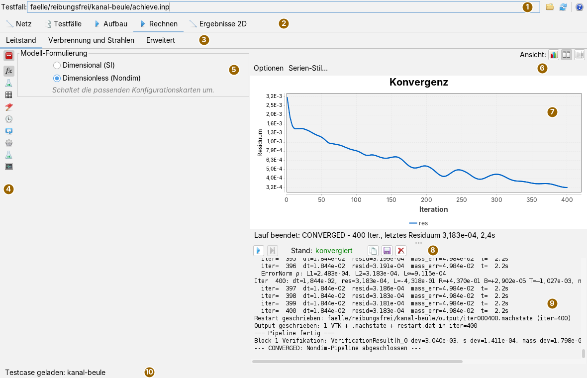
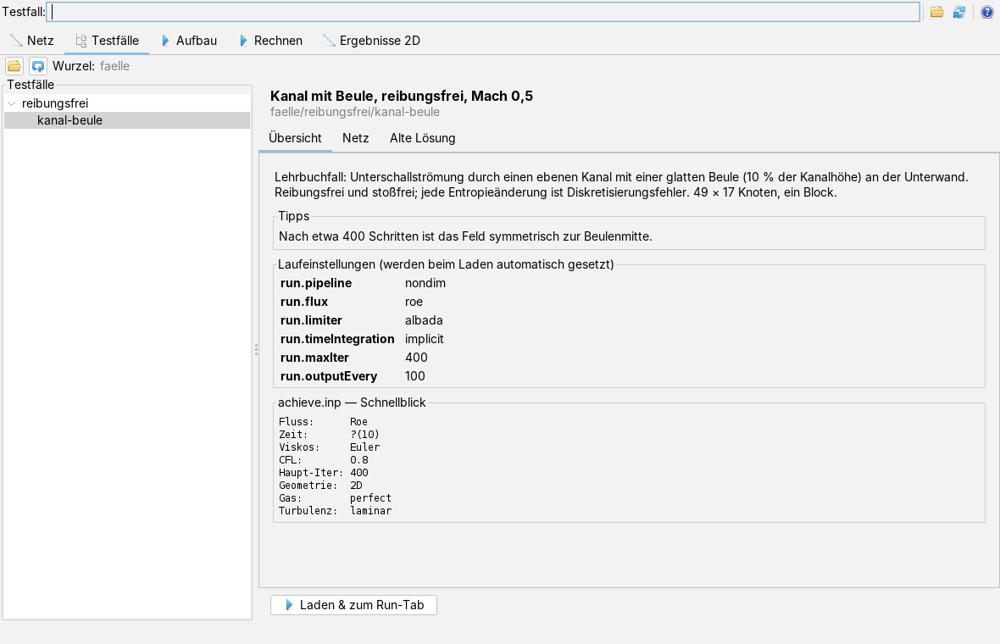
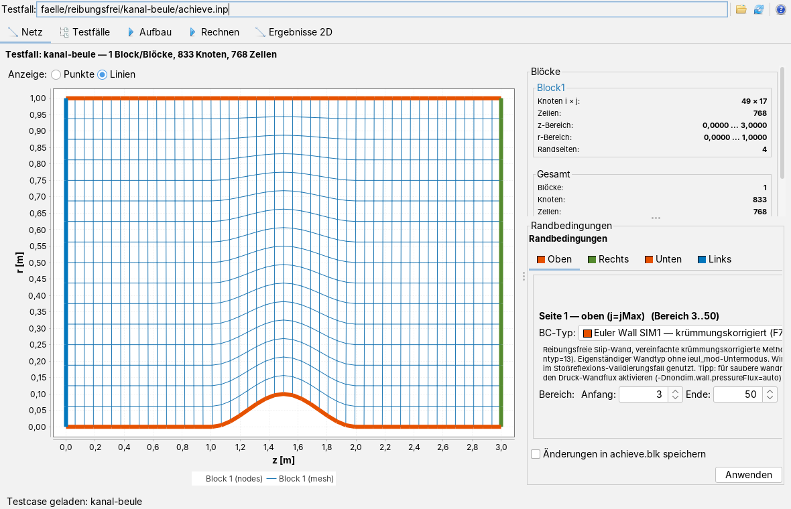
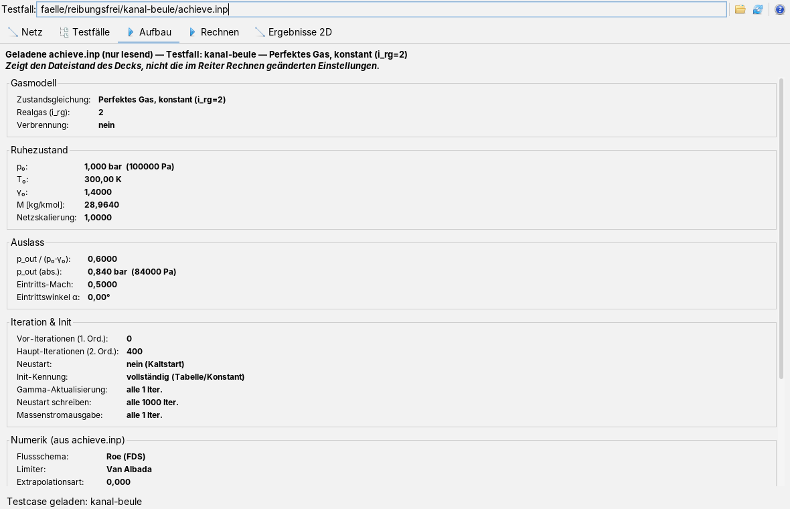
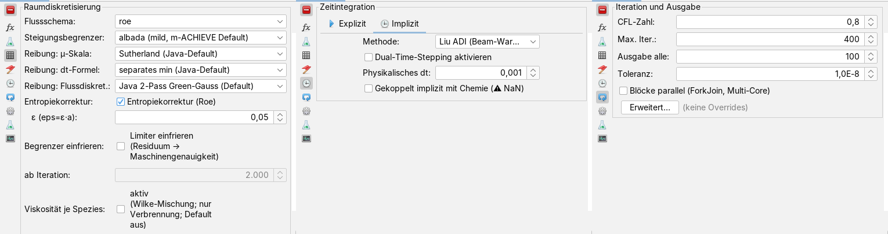
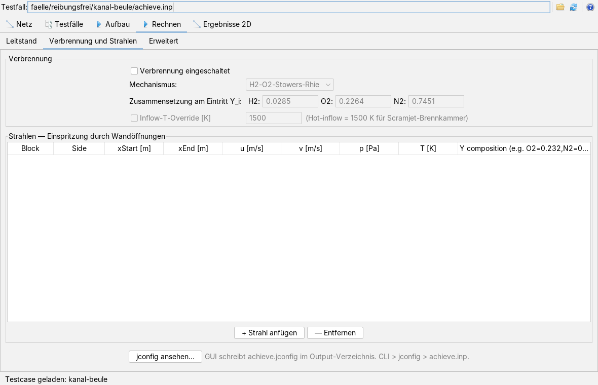
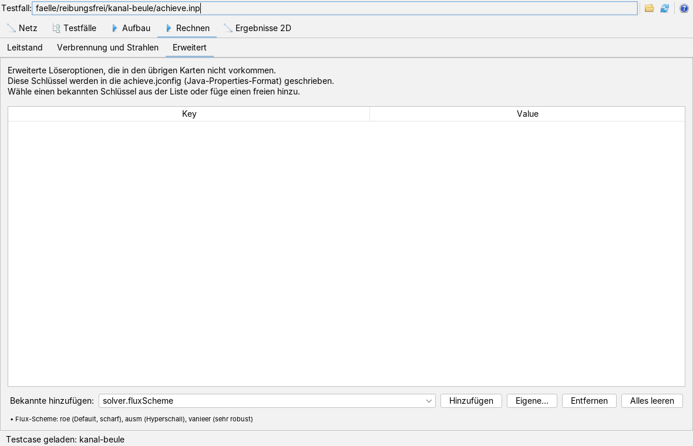
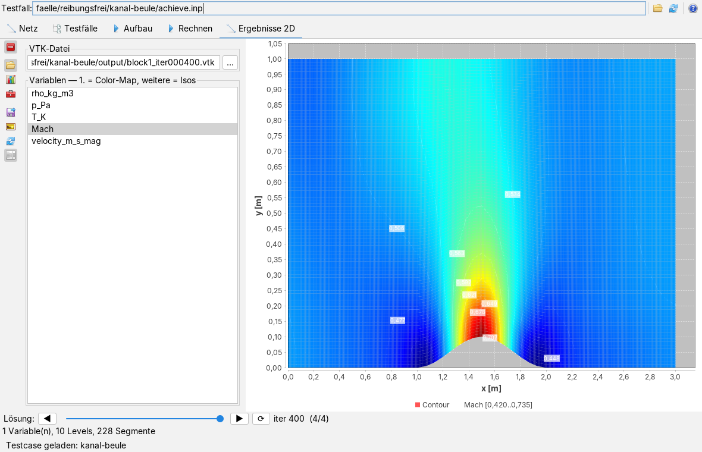
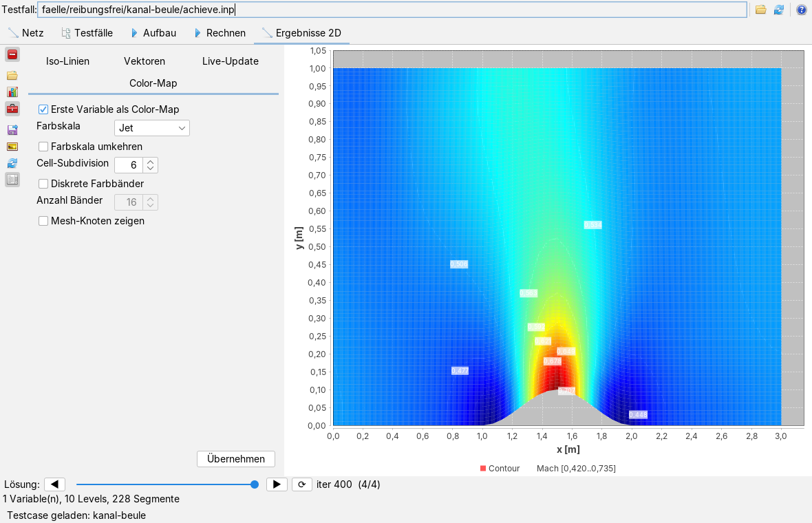

m-ACHIEVE bedienen
Bedienseite, Stand 07.10.2026. Wie man einen Rechenfall lädt, Netz und Randbedingungen ansieht, den Löser einstellt und rechnen lässt, das Ergebnisfeld zeichnet und was dabei in den Fallordner geschrieben wird; dazu die Kommandozeile. Die Bilder sind Bildschirmfotos der App mit einem kleinen Lehrbuchfall: reibungsfreie Unterschallströmung durch einen Kanal mit einer Beule an der Unterwand, 49 × 17 Knoten, 400 Schritte.
Das Fenster
Die App öffnet man im Menü Anwendungen mit Testfall öffnen (achieve.inp)… oder mit Alt+M. Ein Rechenfall ist ein Ordner mit den Eingabedateien im Format des Fortran-Codes: achieve.inp (Steuerung), achieve.grd (Netz), achieve.blk (Blöcke und Ränder), wahlweise gascomp.inp (Gaszusammensetzung) und testcase.properties (Beschreibung und Laufeinstellungen).

Die fünf Hauptreiter in ihrer Reihenfolge: Netz, Testfälle, Aufbau, Rechnen und Ergebnisse 2D. Ein geladener Fall kommt in allen Reitern an; die Statuszeile nennt seinen Ordner.
Die Kopfleiste
| Symbol | Tooltip | Was geschieht |
|---|---|---|
 | achieve.inp oder Testcase-Verzeichnis öffnen | Eine achieve.inp oder einen Fallordner wählen. Fehlt im gewählten Ordner die achieve.inp, sagt das die Statuszeile, und es wird nichts geladen. |
| Aktuellen Testcase neu einlesen | Den Fall aus dem Pfadfeld noch einmal laden, etwa nachdem die Dateien außerhalb geändert wurden. | |
 | Hilfe: öffnet die Doku zu dieser App (wie F1) | Diese Seite in der Doku-App. Ohne Doku-App im Starter nennt die Statuszeile die Adresse der Doku im Netz. |
Das Pfadfeld ist nur zum Lesen; es zeigt die achieve.inp des geladenen Falls.
Einen Fall aus der Sammlung laden

- Im Reiter Testfälle mit (Testcase-Wurzelverzeichnis wählen) einen Ordner wählen. Die App durchsucht ihn in beliebiger Tiefe: jeder Ordner mit einer
achieve.inpwird ein Blatt, die Ordner darüber werden Gruppen. Ordner ohne Fall darunter erscheinen nicht. - (Baum neu aufbauen) liest den Ordner erneut ein, etwa nachdem ein neuer Fall dazugekommen ist.
- Ein Blatt anklicken. Rechts stehen Titel und Ordner des Falls und drei bis fünf Unterreiter:
- Übersicht: Beschreibung und Tipps aus der
testcase.properties, die Laufeinstellungen (run.*) in einem eigenen Kasten, alle übrigen Schlüssel als Referenzwerte, und ein Schnellblick auf dieachieve.inp(Flussschema, Zeitintegration, Reibung, CFL, Iterationen, Geometrie, Gas, Turbulenz). - Netz: das Netz des Falls, nur zum Ansehen.
- Alte Lösung: eine vorhandene
restart.datals Feld; gesucht wird im Fallordner, inoutput/und inReferenz/. - other_info: nur wenn es die gleichnamige Datei gibt (Angaben zu einem Referenzlauf des Fortran-Codes).
- Literaturvergleich: nur wenn die
testcase.propertieseinen Vergleich festlegt (ref.compare); die Tabelle stellt nach einem Lauf Simulation, exakte Lösung und Fehler gegenüber, Aktualisieren wertet neu aus.
- Übersicht: Beschreibung und Tipps aus der
- Laden & zum Run-Tab lädt den Fall und wechselt in den Reiter Rechnen. Die Laufeinstellungen aus der
testcase.propertieswerden dabei in die Karten übernommen und bleiben von Hand änderbar.
Die testcase.properties ist eine Textdatei mit Zeilen schlüssel = wert. title, description und tips werden als Text gezeigt (\n bricht um); run.pipeline (nondim oder dimensional), run.flux, run.limiter, run.timeIntegration, run.cfl, run.maxIter, run.outputEvery, run.viscous und run.limiterFreezeAfter stellen die Oberfläche ein; run.prop.<schlüssel> gibt Löserschalter mit, die keine eigene Bedienung haben. So sieht die Datei des Beispielfalls aus:
title = Kanal mit Beule, reibungsfrei, Mach 0,5 description = Lehrbuchfall: Unterschallströmung durch einen ebenen Kanal … tips = Nach etwa 400 Schritten ist das Feld symmetrisch zur Beulenmitte. run.pipeline = nondim run.flux = roe run.limiter = albada run.timeIntegration = implicit run.maxIter = 400 run.outputEvery = 100
Ein Fall lässt sich auch ohne Sammlung laden, über in der Kopfleiste. Dann bleibt die App im Reiter, in dem sie gerade ist.
Netz und Randbedingungen

Der Reiter Netz zeichnet alle Blöcke, jeden in eigener Farbe, wahlweise als Punkte (Knoten, Vorgabe) oder Linien. Die Achsen sind in Metern, mit der Netzskalierung aus der achieve.inp. Das Mausrad zoomt; das Zurücknehmen des Zooms kehrt zu den Achsgrenzen zurück, die man im Achsendialog des Diagramms getippt hat.
Rechts oben stehen je Block Knoten, Zellen, Ausdehnung und Zahl der Randseiten, darunter die Summe mit Länge, Höhe und Seitenverhältnis. Darunter der Editor der Randbedingungen: ein Reiter je Lage (Oben, Rechts, Unten, Links), darin je Randseite ihr Typ aus dem Katalog der App mit Beschreibung, gegebenenfalls ein Untermodus, und der Bereich (Anfang, Ende). Die gewählte Seite wird im Netz hervorgehoben.
- Typ, Untermodus oder Bereich einer Seite ändern.
- Anwenden übernimmt die Änderung. Ohne Haken bei Änderungen in achieve.blk speichern gilt sie nur im Speicher.
- Mit dem Haken schreibt die App die
achieve.blkneu und trägt geänderte Modusschalter (etwainf_mod,ioutb_mod) in dieachieve.inpein; vorher legt sie einmalig eine Sicherungachieve.inp.bakan.
Ein Netz erzeugt die App nicht; sie liest es aus der achieve.grd.
Die Eingabedatei ansehen

Der Reiter Aufbau zeigt die achieve.inp und, wenn vorhanden, die gascomp.inp als Formular: Gasmodell, Ruhezustand (p₀, T₀, γ₀, Molmasse, Netzskalierung), Auslass (Druckverhältnis und absoluter Druck, Eintritts-Mach und -winkel), Iteration und Initialisierung, Numerik und die Tabelle der aktiven Spezies. Er ist nur zum Lesen da und zeigt den Stand der Datei, nicht die im Reiter Rechnen geänderten Einstellungen.
Den Löser einstellen
Der Reiter Rechnen hat drei Unterreiter. Im Leitstand liegen links die Einstellungen als Karten in einer senkrechten Leiste, rechts Konvergenzdiagramm und Protokoll. Die oberste Taste  blendet die Karten aus und wieder ein.
blendet die Karten aus und wieder ein.
Die erste Karte,  Modell-Formulierung, wählt den Lösungsweg: Dimensional (SI) rechnet in SI-Einheiten, Dimensionless (Nondim) in der Konvention des Fortran-Codes (Vorgabe). Die Wahl bestimmt, welche Karten die Leiste zeigt:
Modell-Formulierung, wählt den Lösungsweg: Dimensional (SI) rechnet in SI-Einheiten, Dimensionless (Nondim) in der Konvention des Fortran-Codes (Vorgabe). Die Wahl bestimmt, welche Karten die Leiste zeigt:
| Symbol | Karte | Was sie einstellt |
|---|---|---|
 | Strömungsphysik | Gasmodell (Idealgas, AGA8-DC92, GERG-2008), achsensymmetrisch, lokaler Zeitschritt, Reibung, Turbulenzmodell und Turbulenzgrad. Beide Wege. |
| Raumdiskretisierung | Flussschema, Steigungsbegrenzer, Skalen und Diskretisierung der Reibungsterme, Entropiekorrektur, Einfrieren des Begrenzers ab einer Iteration. Nur dimensionslos. | |
 | Anfangsfeld | Wie das Feld vor dem ersten Schritt belegt wird (Wert aus der achieve.inp, Ruhe, gleichförmige Anströmung, linear zwischen Ein- und Austritt, isentrop gesperrt). Nur dimensionslos. |
 | Zeitintegration | Explizit oder implizit, das implizite Verfahren (Liu-ADI oder eine Roe-Variante), Dual-Time-Stepping mit physikalischem Zeitschritt. Nur dimensionslos. |
 | Löser (dimensionsbehaftet) | Lösertyp des SI-Wegs und seine Begrenzer. Nur dimensional. |
| Iteration und Ausgabe | CFL-Zahl, Höchstzahl der Schritte, Ausgabe alle n Schritte, Toleranz, Blöcke parallel rechnen; Advanced… öffnet ein Fenster mit Feineinstellungen. Beide Wege. | |
| Gitter und Turbomaschine | Eckbehandlung der Blockränder, Drehzahl Ω, Sliding Mesh und Mixing Plane. Nur dimensionslos. | |
| Turbulenz-Feinabstimmung | Dämpfung und Begrenzung der Wirbelviskosität, Kato-Launder-Produktion, Turbulenzfelder ins VTK. Nur dimensionslos. |
 | Überwachung und Fehlersuche | Konvergenzverlauf als CSV-Datei, zusätzliche Diagnoseausgaben ins Protokoll. Nur dimensionslos. |

Beim Laden eines Falls belegt die App die Karten mit den Werten der achieve.inp (Achsensymmetrie, Gasmodell, Reibung, Turbulenz, Verfahren, CFL) und danach mit den Laufeinstellungen der testcase.properties; das Protokoll nennt beides. Jede Karte ist höchstens 360 Bildpunkte breit und rollt, wenn sie höher ist als das Fenster.
Rechnen
- (Rechnen) startet den Lauf. Er läuft im Hintergrund; die Oberfläche bleibt bedienbar. Diagramm und Protokoll werden vorher geleert.
- Während des Laufs kommt je Schritt ein Punkt ins Konvergenzdiagramm (Residuum halblogarithmisch über der Iteration) und eine Zeile ins Protokoll mit Schritt, Zeitschritt, Residuum, Massenfehler und Laufzeit. Die Zeile unter dem Diagramm zeigt den letzten Stand, nach dem Lauf das Ergebnis.
 (Anhalten) bittet den Löser, nach dem laufenden Schritt aufzuhören.
(Anhalten) bittet den Löser, nach dem laufenden Schritt aufzuhören.- Stand nennt danach konvergiert, Höchstzahl der Schritte erreicht, vom Benutzer angehalten, NaN-Fehler, fehlgeschlagen oder abgebrochen.
Rechts über dem Diagramm wählt Ansicht die Aufteilung:  nur Diagramm,
nur Diagramm,  beides, nur Protokoll. Optionen blendet rechts neben dem Diagramm Einstellungen für Achsen, Linien, Marker und Legende ein; Serien-Stil… öffnet ein eigenes Fenster für Farbe, Strichstärke und Form der Kurve. Neben dem Stand stehen die Protokollknöpfe: kopiert das ganze Protokoll in die Zwischenablage,
beides, nur Protokoll. Optionen blendet rechts neben dem Diagramm Einstellungen für Achsen, Linien, Marker und Legende ein; Serien-Stil… öffnet ein eigenes Fenster für Farbe, Strichstärke und Form der Kurve. Neben dem Stand stehen die Protokollknöpfe: kopiert das ganze Protokoll in die Zwischenablage,  speichert es als Textdatei (Vorschlag
speichert es als Textdatei (Vorschlag machieve_log_JJJJMMTT_HHMM.txt), leert die Anzeige. Dieselben Befehle stehen im Kontextmenü des Protokolls.
output/ im Fallordner. Im dimensionslosen Weg schreibt die App außerdem die in den Karten gewählten Werte für Begrenzer, Anfangsfeld, Flussschema und implizites Verfahren in die achieve.inp zurück, damit die Datei dem Lauf entspricht; vor der ersten Änderung legt sie einmalig achieve.inp.bak an. Wer einen Fall unverändert halten will, rechnet auf einer Kopie.Verbrennung und Strahlen

Der Unterreiter Verbrennung und Strahlen schaltet die Verbrennung ein, wählt den Mechanismus und die Massenanteile H₂, O₂ und N₂ am Eintritt (sie sollten zusammen 1 ergeben) und erzwingt auf Wunsch eine Eintrittstemperatur. Die Tabelle darunter beschreibt Strahlen, die durch Öffnungen in einer Wand eintreten: Block, Seite, Anfang und Ende in x, Geschwindigkeiten, Druck, Temperatur und Zusammensetzung. + Strahl anfügen hängt eine Zeile mit Vorgabewerten an, Entfernen löscht die gewählte. jconfig ansehen… zeigt unter der Tabelle, was beim Start geschrieben wird.
Erweiterte Schlüssel

Im Unterreiter Erweitert stehen Löserschlüssel, die keine Karte haben. Bekannte hinzufügen bietet elf an (Flussschema, Vinokur-Liu-Mittelung, Blockparallelisierung, drei für Dual-Time-Stepping, drei für Rotation, Verlaufsdatei, Auftrieb und Widerstand); unter der Liste steht jeweils eine Zeile Erklärung. Eigene… fragt in einem kleinen Fenster einen beliebigen Schlüssel ab. Die Werte werden in der Tabelle geändert.
Was in diesem und im vorigen Unterreiter gesetzt ist, schreibt die App bei jedem Start als output/achieve.jconfig (Java-Properties-Format) und gibt die Datei dem Löser mit. Es gilt die Reihenfolge Kommandozeile vor achieve.jconfig vor achieve.inp.
Ergebnisse ansehen

Nach dem Lauf lädt der Reiter Ergebnisse 2D die jüngste VTK-Datei des Laufs und zeichnet die Machzahl. Bei mehreren Blöcken werden alle Dateien block<N>_…vtk desselben Schritts zusammen geladen und an den Blockgrenzen stetig verbunden.
| Symbol | Tooltip | Was geschieht |
|---|---|---|
| Sidebar ein- oder ausblenden | Karten aus- und einblenden; das Feld wird breiter. |
| VTK-Datei-Auswahl + Variablen | Karte mit Dateipfad (… wählt eine Datei) und Variablenliste. Die erste gewählte Variable wird Farbfläche, alle gewählten werden Isolinien. |
| Titel, Achsen, Legende | Karte mit Titel, Achsbeschriftungen, Achsgrenzen, Teilung, Legende und Gitterlinien. | |
| Color-Map, Iso-Linien, Vektoren | Karte mit den Zeichenoptionen, siehe unten. | |
| VTK-Datei laden | Die Datei aus dem Pfadfeld laden und die Variablenliste füllen. | |
 | Plot mit aktuellen Optionen erzeugen | Neu zeichnen. |
| Beim Schreiben neuer VTK-Files automatisch aktualisieren | Schalter: alle zwei Sekunden im Ausgabeordner nach einer neueren Lösung sehen und sie zeichnen, auch während des Laufs. | |
| Isolinien beschriften | Schalter: Werte an die Isolinien schreiben. |

Die Karte der Zeichenoptionen hat vier Reiter: Farbfläche (Farbskala, umkehren, Zellunterteilung, diskrete Farbbänder und ihre Zahl, Netzknoten zeigen), Isolinien (Zahl der Stufen, Beschriftung), Vektoren (Geschwindigkeitspfeile, jeder n-te Knoten) und Live-Update (einschalten, Mindestabstand in Schritten). Unter dem Feld blättert die Zeile Lösung: mit ◀, ▶ und dem Schieber durch die geschriebenen Zwischenstände; ⟳ liest den Ordner neu ein. Das Mausrad zoomt.
Was gespeichert wird
Ein Lauf schreibt nach output/ im Fallordner:
block<N>_iter<nnnnnn>.vtkje Block und Ausgabeschritt: das Feld mit Dichte, Druck, Temperatur, Machzahl und Geschwindigkeit;iter<nnnnnn>.machstateundrestart_iter<nnnnnn>.dat(dimensionsloser Weg): Neustartstände; ein Neustart aus.machstateist bitgleich;achieve.jconfigmit den Einstellungen der Unterreiter Verbrennung und Strahlen und Erweitert (bei jedem Start, mindestens mit der Zeile zur Verbrennung); mit der Karte Überwachung und Fehlersuche zusätzlich die Konvergenzverlaufsdatei.
Dazu kommen die Rückschreibungen in achieve.inp und achieve.blk, die oben beschrieben sind. Beim Sichern des Arbeitsbereichs merkt sich die App den geladenen Fall, das Wurzelverzeichnis der Fallsammlung und die Grundeinstellungen des Lösers (Lösertyp, CFL, Höchstzahl, Ausgabeabstand, Toleranz, Gasmodell, Achsensymmetrie, Begrenzer, Runge-Kutta-Stufen) und stellt sie beim nächsten Start wieder her.
Kommandozeile
Derselbe Löser läuft ohne Oberfläche über cmd.machieve.CfvnSolver. Klassenpfad sind die übersetzten Klassen von app-machieve und der Framework-Module, an denen es hängt:
java -cp <klassenpfad> cmd.machieve.CfvnSolver <fallordner> [optionen]
# Beispiel: der Kanal mit Beule, 400 Schritte, dimensionslos
java -cp <klassenpfad> cmd.machieve.CfvnSolver faelle/reibungsfrei/kanal-beule \
-S:NONDIM_PIPELINE --max-iter 400 --output-every 100 --output-dir aus
| Schalter | Wirkung |
|---|---|
-S:TYP | Lösertyp: EULER_EXPLICIT_1ST, MUSCL_ALBADA_RK1 (Vorgabe), MUSCL_ALBADA_RK4, IMPLICIT_LIU oder NONDIM_PIPELINE (dimensionsloser Weg) |
--max-iter N, --output-every N | Höchstzahl der Schritte (Vorgabe 5000), Ausgabe alle N Schritte (500) |
--cfl X, --tolerance X | CFL-Zahl (0,5), Konvergenzschwelle (1e-8) |
--output-dir DIR | Ausgabeordner (Vorgabe output im Startverzeichnis) |
--no-realgas, --gerg | Idealgas statt AGA8-DC92; Realgas nach GERG-2008 |
--no-axisym | eben statt achsensymmetrisch |
--local-dt | lokaler Zeitschritt je Zelle (stationäre Fälle) |
--viscous, --prandtl X | laminare Reibungsterme; Prandtl-Zahl (0,72) |
--k-omega, --k-omega-sst, --k-epsilon | Turbulenzmodell; schaltet die Reibung mit ein |
--limiter L | Begrenzer: none, minmod, albada, fromm, thirdorder |
--combustion | H₂-O₂-Verbrennung; schaltet die Reibung mit ein |
--inflow-temperature K, --hot-inflow | Eintritts-Ruhetemperatur erzwingen; --hot-inflow setzt 1500 K |
--jconfig DATEI | erweiterte Einstellungen; ohne den Schalter wird eine achieve.jconfig im Fallordner gelesen, wenn es sie gibt |
--restart-load DATEI, --restart-every N | aus einer .machstate-Datei weiterrechnen; alle N Schritte einen Neustartstand schreiben |
--help | die Aufrufzeile mit allen Schaltern |
Das Programm schreibt vor dem Lauf die Einstellungen, während des Laufs die Schritte und danach Status, Schrittzahl, Residuum, Massenfehler, Laufzeit und Zahl der Ausgabedateien. Rückgabewert 0 heißt konvergiert oder Höchstzahl erreicht, 1 heißt Fehler oder unbekannter Schalter. Der dimensionslose Weg hat zusätzlich einen eigenen Einstieg für die Fälle zur Validierung gegen den Fortran-Code; er steht in der Übersicht.
Hilfe und Löser-Handbuch
Das Fragezeichen der Kopfleiste öffnet diese Seite in der Doku-App. Dem Modul liegt außerdem ein Löser-Handbuch bei, in HTML und als PDF, deutsch und englisch: Schnellstart, Aufbau des Lösers, Aufruf und Konfigurationsschlüssel, Lösungsmodi, Flussschemata und Begrenzer, Randbedingungen, Turbulenz, Verbrennung, Rotation, die beiden dimensionslosen Konventionen, Konvergenz und Fehlersuche.
Tastatur und Maus
Alt+M öffnet die App. Das Mausrad zoomt Netz, Konvergenzdiagramm und Ergebnisfeld; Ziehen mit der Maus zoomt auf einen Ausschnitt. Im Baum der Fallsammlung wählen die Pfeiltasten den nächsten Eintrag. Weitere Tastenkürzel hat die App nicht.
Grenzen
- Der dimensionslose Weg meldet nach dem Lauf stets konvergiert, auch wenn er nur die Höchstzahl der Schritte erreicht hat und die Toleranz nicht unterschritten ist (im Beispiel: Residuum 3,2·10⁻⁴ bei Toleranz 10⁻⁸). Maßgeblich ist der Verlauf im Diagramm.
- Die Meldungen des Rechenkerns im Protokoll sind deutsch, auch in der englischen Oberfläche; ebenso die Beschreibungen der Randbedingungen, Auswahllisten und Tooltips der Karten.
- Der Schnellblick im Reiter Testfälle kennt nicht alle Werte des impliziten Verfahrens; er zeigt sie dann als
?(n). - Die Feineinstellungen der Karte Iteration und Ausgabe, eigene Schlüssel im Unterreiter Erweitert und der Serienstil des Diagramms öffnen eigene kleine Fenster.
- Netze erzeugt die App nicht; es gibt keine dreidimensionale Geometrie und keine Netzadaption.
- Die 16-Spezies-Methanchemie und GERG-2008 sind rechenintensiv; mehr dazu in der Übersicht.
Was die App kann, worauf sie aufbaut und wie sie geprüft ist, steht in der Übersicht.
Symbole: Fugue Icons von Yusuke Kamiyamane, Lizenz CC BY 3.0.